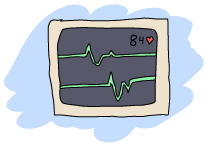
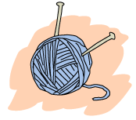

EUnited Nations Council
The Need for Tests
The software we've written has gotten progressively bigger and somewhat more complex with time. When that happens, it becomes rather tedious to start an Erlang shell, type things in, look at results, and make sure things work after code has been changed. As time goes on, it becomes simpler for everyone to run tests that are all prepared and ready in advance rather than following checklists of stuff to check by hand all the time. These are usually pretty good reasons to want tests in your software. It's also possible that you're a fan of test-driven development and so will also find tests useful.
If you recall the chapter where we wrote a RPN calculator, we had a few tests that we had manually written. They were simply a set of pattern matches of the form Result = Expression that would crash if something went wrong, or would succeed otherwise. That works for simple bits of code you write for yourself, but when we get to more serious tests, we will definitely want something better, like a framework.
For unit tests, we'll tend to stick to EUnit (which we see in this chapter). For integration tests, EUnit as well as Common Test can both do the job. In fact, Common Test can do everything from unit tests up to system tests, and even testing of external software, not written in Erlang. For now we'll go with EUnit, given how simple it is for the good results it yields.
EUnit, What's a EUnit?
EUnit, in its simplest form, is just a way to automate running functions that end in _test() in a module by assuming they are unit tests. If you go dig out that RPN calculator I mentioned above, you'll find the following code:
rpn_test() ->
5 = rpn("2 3 +"),
87 = rpn("90 3 -"),
-4 = rpn("10 4 3 + 2 * -"),
-2.0 = rpn("10 4 3 + 2 * - 2 /"),
ok = try
rpn("90 34 12 33 55 66 + * - +")
catch
error:{badmatch,[_|_]} -> ok
end,
4037 = rpn("90 34 12 33 55 66 + * - + -"),
8.0 = rpn("2 3 ^"),
true = math:sqrt(2) == rpn("2 0.5 ^"),
true = math:log(2.7) == rpn("2.7 ln"),
true = math:log10(2.7) == rpn("2.7 log10"),
50 = rpn("10 10 10 20 sum"),
10.0 = rpn("10 10 10 20 sum 5 /"),
1000.0 = rpn("10 10 20 0.5 prod"),
ok.
This was the test function we wrote to make sure the calculator worked fine. Find the old module and try this:
1> c(calc).
{ok,calc}
2> eunit:test(calc).
Test passed.
ok
Calling eunit:test(Module). was all we needed! Yay, we now know EUnit! Pop the champagne and let's head to a different chapter!
Obviously a testing framework that only does this little wouldn't be very useful, and in technical programmer jargon, it might be described as 'not very good'. EUnit does more than automatically exporting and running functions ending in _test(). For one, you can move the tests out to a different module so that your code and its tests are not mixed together. This means you can't test private functions anymore, but also means that if you develop all your tests against the module's interface (the exported functions), then you won't need to rewrite tests when you refactor your code. Let's try separating tests and code with two simple modules:
-module(ops). -export([add/2]). add(A,B) -> A + B.
-module(ops_tests).
-include_lib("eunit/include/eunit.hrl").
add_test() ->
4 = ops:add(2,2).
So we have ops and ops_tests, where the second includes tests related to the first. Here's a thing EUnit can do:
3> c(ops).
{ok,ops}
4> c(ops_tests).
{ok,ops_tests}
5> eunit:test(ops).
Test passed.
ok
Calling eunit:test(Mod) automatically looks for Mod_tests and runs the tests within that one. Let's change the test a bit (make it 3 = ops:add(2,2)) to see what failures look like:
6> c(ops_tests).
{ok,ops_tests}
7> eunit:test(ops).
ops_tests: add_test (module 'ops_tests')...*failed*
::error:{badmatch,4}
in function ops_tests:add_test/0
=======================================================
Failed: 1. Skipped: 0. Passed: 0.
error

We can see what test failed (ops_tests: add_test...) and why it did (::error:{badmatch,4}). We also get a full report of how many tests passed or failed. The output is pretty bad though. At least as bad as regular Erlang crashes: no line numbers, no clear explanation (4 didn't match with what, exactly?), etc. We're left helpless by a test framework that runs tests but doesn't tell you much about them.
For this reason, EUnit introduces a few macros to help us. Each of them will give us cleaner reporting (including line numbers) and clearer semantics. They're the difference between knowing that something goes wrong and knowing why something goes wrong:
?assert(Expression), ?assertNot(Expression)- Will test for boolean values. If any value other than
truemakes it into?assert, an error will be shown. Same for?assertNot, but for negative values. This macro is somewhat equivalent totrue = Xorfalse = Y. ?assertEqual(A, B)- Does a strict comparison (equivalent to
=:=) between two expressions, A and B. If they are different, a failure will occur. This is roughly equivalent totrue = X =:= Y. Since R14B04, the macro?assertNotEqualis available to do the opposite of?assertEqual. ?assertMatch(Pattern, Expression)- This allows us to match in a form similar to
Pattern = Expression, without variables ever binding. This means that I could do something like?assertMatch({X,X}, some_function())and assert that I receive a tuple with two elements being identical. Moreover, I could later do?assertMatch(X,Y)and X would not be bound. - This is to say that rather than properly being like
Pattern = Expression, what we have is closer to(fun (Pattern) -> true; (_) -> erlang:error(nomatch) end)(Expression): variables in the pattern's head never get bound across multiple assertions. The macro?assertNotMatchhas been added to EUnit in R14B04. ?assertError(Pattern, Expression)- Tells EUnit that Expression should result in an error. As an example,
?assertError(badarith, 1/0)would be a successful test. ?assertThrow(Pattern, Expression)- Exactly the same as
?assertError, but withthrow(Pattern)instead oferlang:error(Pattern). ?assertExit(Pattern, Expression)- Exactly the same as
?assertError, but withexit(Pattern)(and notexit/2) instead oferlang:error(Pattern). ?assertException(Class, Pattern, Expression)- A general form of the three previous macros. As an example,
?assertException(error, Pattern, Expression)is the same as?assertError(Pattern, Expression). Starting with R14B04, there is also the macro?assertNotException/3available for tests.
Using these macros, we could write better tests in our module:
-module(ops_tests).
-include_lib("eunit/include/eunit.hrl").
add_test() ->
4 = ops:add(2,2).
new_add_test() ->
?assertEqual(4, ops:add(2,2)),
?assertEqual(3, ops:add(1,2)),
?assert(is_number(ops:add(1,2))),
?assertEqual(3, ops:add(1,1)),
?assertError(badarith, 1/0).
And running them:
8> c(ops_tests).
./ops_tests.erl:12: Warning: this expression will fail with a 'badarith' exception
{ok,ops_tests}
9> eunit:test(ops).
ops_tests: new_add_test...*failed*
::error:{assertEqual_failed,[{module,ops_tests},
{line,11},
{expression,"ops : add ( 1 , 1 )"},
{expected,3},
{value,2}]}
in function ops_tests:'-new_add_test/0-fun-3-'/1
in call from ops_tests:new_add_test/0
=======================================================
Failed: 1. Skipped: 0. Passed: 1.
error
See how much nicer the error reporting is? We know that the assertEqual on line 11 of ops_tests failed. When we called ops:add(1,1), we thought we'd receive 3 as a value, but we instead got 2. Of course you've got to read these values as Erlang terms, but at least they're there.
What's annoying with this, however, is that even though we had 5 assertions, only one failed but the whole test was still considered a failure. It would be nicer to know that some assertion failed without behaving as if all the others after it failed too. Our test is the equivalent of taking an exam in school, and as soon as you make a mistake, you fail and get thrown out of school. Then your dog dies and you just have a horrible day.
Test Generators
Because of this common need for flexibility, EUnit supports something called test generators. Test generators are pretty much shorthand for assertions wrapped in functions that can be run later, in clever manners. Instead of having functions ending with _test() with macros that are of the form ?assertSomething, we will use functions that end in _test_() and macros of the form ?_assertSomething. Those are small changes, but they make things much more powerful. The two following tests would be equivalent:
function_test() -> ?assert(A == B). function_test_() -> ?_assert(A == B).
Here, function_test_() is called a test generator function, while ?_assert(A == B) is called a test generator. It is called that way, because secretly, the underlying implementation of ?_assert(A == B) is fun() -> ?assert(A == B) end. That is to say, a function that generates a test.
The advantage of test generators, compared to regular assertions, is that they are funs. This means that they can be manipulated without being executed. We could, in fact, have test sets of the following form:
my_test_() ->
[?_assert(A),
[?_assert(B),
?_assert(C),
[?_assert(D)]],
[[?_assert(E)]]].
Test sets can be deeply nested lists of test generators. We could have functions that return tests! Let's add the following to ops_tests:
add_test_() ->
[test_them_types(),
test_them_values(),
?_assertError(badarith, 1/0)].
test_them_types() ->
?_assert(is_number(ops:add(1,2))).
test_them_values() ->
[?_assertEqual(4, ops:add(2,2)),
?_assertEqual(3, ops:add(1,2)),
?_assertEqual(3, ops:add(1,1))].
Because only add_test_() ends in _test_(), the two functions test_them_Something() will not be seen as tests. In fact, they will only be called by add_test_() to generate tests:
1> c(ops_tests).
./ops_tests.erl:12: Warning: this expression will fail with a 'badarith' exception
./ops_tests.erl:17: Warning: this expression will fail with a 'badarith' exception
{ok,ops_tests}
2> eunit:test(ops).
ops_tests:25: test_them_values...*failed*
[...]
ops_tests: new_add_test...*failed*
[...]
=======================================================
Failed: 2. Skipped: 0. Passed: 5.
error
So we still get the expected failures, and now you see that we jumped from 2 tests to 7. The magic of test generators.
What if we only wanted to test some parts of the suite, maybe just add_test_/0? Well EUnit has a few tricks up its sleeves:
3> eunit:test({generator, fun ops_tests:add_test_/0}).
ops_tests:25: test_them_values...*failed*
::error:{assertEqual_failed,[{module,ops_tests},
{line,25},
{expression,"ops : add ( 1 , 1 )"},
{expected,3},
{value,2}]}
in function ops_tests:'-test_them_values/0-fun-4-'/1
=======================================================
Failed: 1. Skipped: 0. Passed: 4.
error
Note that this only works with test generator functions. What we have here as {generator, Fun} is what EUnit parlance calls a test representation. We have a few other representations:
{module, Mod}runs all tests in Mod{dir, Path}runs all the tests for the modules found in Path{file, Path}runs all the tests found in a single compiled module{generator, Fun}runs a single generator function as a test, as seen above{application, AppName}runs all the tests for all the modules mentioned in AppName's.appfile.
These different test representations can make it easy to run test suites for entire applications or even releases.

Fixtures
It would still be pretty hard to test entire applications just by using assertions and test generators. This is why fixtures were added. Fixtures, while not being a catch-all solution to getting your tests up and running to the application level, allow you to build a certain scaffolding around tests.
The scaffolding in question is a general structure that allows us to define setup and teardown functions for each of the test. These functions will allow you to build the state and environment required for each of the tests to be useful. Moreover, the scaffolding will let you specify how to run the tests (do you want to run them locally, in separate processes, etc.?)
There are a few types of fixtures available, with variations to them. The first type is simply called the setup fixture. A setup fixture takes one of the many following forms:
{setup, Setup, Instantiator}
{setup, Setup, Cleanup, Instantiator}
{setup, Where, Setup, Instantiator}
{setup, Where, Setup, Cleanup, Instantiator}
Argh! It appears we need a little bit of EUnit vocabulary in order to understand this (this will be useful if you need to go read the EUnit documentation):
- Setup
- A function that takes no argument. Each of the tests will be passed the value returned by the setup function.
- Cleanup
- A function that takes the result of a setup function as an argument, and takes care of cleaning up whatever is needed. If in OTP
terminatedoes the opposite ofinit, then cleanup functions are the opposite of setup functions for EUnit. - Instantiator
- It's a function that takes the result of a setup function and returns a test set (remember, test sets are possibly deeply nested lists of
?_Macroassertions). - Where
- Specifies how to run the tests:
local,spawn,{spawn, node()}.
Alright, so what does this look like in practice? Well, let's imagine some test to make sure that a fictive process registry correctly handles trying to register the same process twice, with different names:
double_register_test_() ->
{setup,
fun start/0, % setup function
fun stop/1, % teardown function
fun two_names_one_pid/1}. % instantiator
start() ->
{ok, Pid} = registry:start_link(),
Pid.
stop(Pid) ->
registry:stop(Pid).
two_names_one_pid(Pid) ->
ok = registry:register(Pid, quite_a_unique_name, self()),
Res = registry:register(Pid, my_other_name_is_more_creative, self()),
[?_assertEqual({error, already_named}, Res)].
This fixture first starts the registry server within the start/0 function. Then, the instantiator two_names_one_pid(ResultFromSetup) is called. In that test, the only thing I do is try to register the current process twice.
That's where the instantiator does its work. The result of the second registration is stored in the variable Res. The function will then return a test set containing a single test (?_assertEqual({error, already_named}, Res)). That test set will be run by EUnit. Then, the teardown function stop/1 will be called. Using the pid returned by the setup function, it'll be able to shut down the registry that we had started beforehand. Glorious!
What's even better is that this whole fixture itself can be put inside a test set:
some_test_() ->
[{setup, fun start/0, fun stop/1, fun some_instantiator1/1},
{setup, fun start/0, fun stop/1, fun some_instantiator2/1},
...
{setup, fun start/0, fun stop/1, fun some_instantiatorN/1}].
And this will work! What's annoying there is the need to always repeat that setup and teardown functions, especially when they're always the same. That's where the second type of fixture, the foreach fixture, enters the stage:
{foreach, Where, Setup, Cleanup, [Instantiator]}
{foreach, Setup, Cleanup, [Instantiator]}
{foreach, Where, Setup, [Instantiator]}
{foreach, Setup, [Instantiator]}
The foreach fixture is quite similar to the setup fixture, with the difference that it takes lists of instantiators. Here's the some_test_/0 function written with a foreach fixture:
some2_test_() ->
{foreach,
fun start/0,
fun stop/1,
[fun some_instantiator1/1,
fun some_instantiator2/1,
...
fun some_instantiatorN/1]}.
That's better. The foreach fixture will then take each of the instantiators and run the setup and teardown function for each of them.
Now we know how to have a fixture for one instantiator, then a fixture for many of them (each getting their setup and teardown function calls). What if I want to have one setup function call, and one teardown function calls for many instantiators?
In other words, what if I have many instantiators, but I want to set some state only once? There's no easy way for this, but here's a little trick that might do it:
some_tricky_test_() ->
{setup,
fun start/0,
fun stop/1,
fun (SetupData) ->
[some_instantiator1(SetupData),
some_instantiator2(SetupData),
...
some_instantiatorN(SetupData)]
end}.
By using the fact that test sets can be deeply nested lists, we wrap a bunch of instantiators with an anonymous function behaving like an instantiator for them.
Tests can also have some finer grained control into how they should be running when you use fixtures. Four options are available:
{spawn, TestSet}- Runs tests in a separate process than the main test process. The test process will wait for all of the spawned tests to finish
{timeout, Seconds, TestSet}- The tests will run for Seconds number of Seconds. If they take longer than Seconds to finish, they will be terminated without further ado.
{inorder, TestSet}- This tells EUnit to run the tests within the test set strictly in the order they are returned.
{inparallel, Tests}- Where possible, the tests will be run in parallel.
As an example, the some_tricky_test_/0 test generator could be rewritten as follows:
some_tricky2_test_() ->
{setup,
fun start/0,
fun stop/1,
fun(SetupData) ->
{inparallel,
[some_instantiator1(SetupData),
some_instantiator2(SetupData),
...
some_instantiatorN(SetupData)]}
end}.
That's really most of it for fixtures, but there's one more nice trick I've forgot to show for now. You can give descriptions of tests in a neat way. Check this out:
double_register_test_() ->
{"Verifies that the registry doesn't allow a single process to "
"be registered under two names. We assume that each pid has the "
"exclusive right to only one name",
{setup,
fun start/0,
fun stop/1,
fun two_names_one_pid/1}}.
Nice, huh? You can wrap a fixture by doing {Comment, Fixture} in order to get readable tests. Let's put this in practice.
Testing Regis
Because just seeing fake tests as above isn't the most entertaining thing to do, and because pretending to test software that doesn't exist is even worse, we'll instead study the tests I have written for the regis-1.0.0 process registry, the one used by Process Quest.

Now, the development of regis was done in a test-driven manner. Hopefully you don't hate TDD (Test-Driven Development), but even if you do, it shouldn't be too bad because we'll look at the test suite after the fact. By doing this, we cut through the few trial-and-error sequences and backpedaling that I might have had writing it the first time and I'll look like I'm really competent, thanks to the magic of text editing.
The regis application is made of three processes: a supervisor, a main server, and then an application callback module. Knowing that the supervisor will only check the server and that the application callback module will do nothing except behaving as an interface for the two other modules, we can safely write a test suite focusing on the server itself, without any external dependencies.
Being a good TDD fan, I begun by writing a list of all the features I wanted to cover:
- Respect an interface similar to the Erlang default process registry
- The Server will have a registered name so that it can be contacted without tracking its pid
- A process can be registered through our service and can then be contacted by its name
- A list of all registered processes can be obtained
- A name that is not registered by any process should return the atom 'undefined' (much like the regular Erlang registry) in order to crash calls using them
- A process can not have two names
- Two processes can not share the same name
- A process that was registered can be registered again if it was unregistered between calls
- Unregistering a process never crashes
- A registered process' crash will unregister its name
That's a respectable list. Doing the elements one by one and adding cases as I went, I transformed each of the specification into a test. The final file obtained was regis_server_tests. I wrote things using a basic structure a bit like this:
-module(regis_server_tests).
-include_lib("eunit/include/eunit.hrl").
%%%%%%%%%%%%%%%%%%%%%%%%%%
%%% TESTS DESCRIPTIONS %%%
%%%%%%%%%%%%%%%%%%%%%%%%%%
%%%%%%%%%%%%%%%%%%%%%%%
%%% SETUP FUNCTIONS %%%
%%%%%%%%%%%%%%%%%%%%%%%
%%%%%%%%%%%%%%%%%%%%
%%% ACTUAL TESTS %%%
%%%%%%%%%%%%%%%%%%%%
%%%%%%%%%%%%%%%%%%%%%%%%
%%% HELPER FUNCTIONS %%%
%%%%%%%%%%%%%%%%%%%%%%%%
Ok, I give it to you, that looks weird when the module is empty, but as you fill it up, it makes more and more sense.
After adding a first test, the initial one being that it should be possible to start a server and access it by name, the file looked like this:
-module(regis_server_tests).
-include_lib("eunit/include/eunit.hrl").
%%%%%%%%%%%%%%%%%%%%%%%%%%
%%% TESTS DESCRIPTIONS %%%
%%%%%%%%%%%%%%%%%%%%%%%%%%
start_stop_test_() ->
{"The server can be started, stopped and has a registered name",
{setup,
fun start/0,
fun stop/1,
fun is_registered/1}}.
%%%%%%%%%%%%%%%%%%%%%%%
%%% SETUP FUNCTIONS %%%
%%%%%%%%%%%%%%%%%%%%%%%
start() ->
{ok, Pid} = regis_server:start_link(),
Pid.
stop(_) ->
regis_server:stop().
%%%%%%%%%%%%%%%%%%%%
%%% ACTUAL TESTS %%%
%%%%%%%%%%%%%%%%%%%%
is_registered(Pid) ->
[?_assert(erlang:is_process_alive(Pid)),
?_assertEqual(Pid, whereis(regis_server))].
%%%%%%%%%%%%%%%%%%%%%%%%
%%% HELPER FUNCTIONS %%%
%%%%%%%%%%%%%%%%%%%%%%%%
See the organization now? Already so much better. The top part of the file contains only fixtures and top-level description of features. The second part contains setup and cleanup functions that we might need. The last one contains the instantiators returning test sets.
In this case, the instantiator checks to see whether regis_server:start_link() spawned a process that was truly alive, and that it was registered with the name regis_server. If it's true, then that will work for the server.
If we look at the current version of the file, it now looks more like this for the two first sections:
-module(regis_server_tests).
-include_lib("eunit/include/eunit.hrl").
-define(setup(F), {setup, fun start/0, fun stop/1, F}).
%%%%%%%%%%%%%%%%%%%%%%%%%%
%%% TESTS DESCRIPTIONS %%%
%%%%%%%%%%%%%%%%%%%%%%%%%%
start_stop_test_() ->
{"The server can be started, stopped and has a registered name",
?setup(fun is_registered/1)}.
register_test_() ->
[{"A process can be registered and contacted",
?setup(fun register_contact/1)},
{"A list of registered processes can be obtained",
?setup(fun registered_list/1)},
{"An undefined name should return 'undefined' to crash calls",
?setup(fun noregister/1)},
{"A process can not have two names",
?setup(fun two_names_one_pid/1)},
{"Two processes cannot share the same name",
?setup(fun two_pids_one_name/1)}].
unregister_test_() ->
[{"A process that was registered can be registered again iff it was "
"unregistered between both calls",
?setup(fun re_un_register/1)},
{"Unregistering never crashes",
?setup(fun unregister_nocrash/1)},
{"A crash unregisters a process",
?setup(fun crash_unregisters/1)}].
%%%%%%%%%%%%%%%%%%%%%%%
%%% SETUP FUNCTIONS %%%
%%%%%%%%%%%%%%%%%%%%%%%
start() ->
{ok, Pid} = regis_server:start_link(),
Pid.
stop(_) ->
regis_server:stop().
%%%%%%%%%%%%%%%%%%%%%%%%
%%% HELPER FUNCTIONS %%%
%%%%%%%%%%%%%%%%%%%%%%%%
%% nothing here yet
Nice, isn't it? Note that as I was writing the suite, I ended up seeing that I never needed any other setup and teardown functions than start/0 and stop/1. For this reason, I added the ?setup(Instantiator) macro, that makes things look a bit better than if all the fixtures were to be fully expanded. It's now pretty obvious that I turned each point of the feature list into a bunch of tests. You'll note that I divided all tests depending on whether they had to do with starting and stopping the server (start_stop_test_/0), registering processes (register_test_/0) and unregistering processes (unregister_test_/0).
By reading the test generators' definitions, we can know what the module is supposed to be doing. The tests become documentation (although they should not replace proper documentation).
We'll study the tests a bit and see why things were done in a certain way. The first test in the list start_stop_test_/0, with the simple requirement that the server can be registered:
start_stop_test_() ->
{"The server can be started, stopped and has a registered name",
?setup(fun is_registered/1)}.
The implementation of the test itself is put in the is_registered/1 function:
%%%%%%%%%%%%%%%%%%%%
%%% ACTUAL TESTS %%%
%%%%%%%%%%%%%%%%%%%%
is_registered(Pid) ->
[?_assert(erlang:is_process_alive(Pid)),
?_assertEqual(Pid, whereis(regis_server))].

As explained earlier when we looked at the first version of the test, this checks whether the process is available or not. There's nothing really special about that one, although the function erlang:is_process_alive(Pid) might be new to you. As its name says, it checks whether a process is currently running. I've put that test in there for the simple reason that it might well be possible that the server crashes as soon as we start it, or that it's never started in the first place. We don't want that.
The second test is related to being able to register a process:
{"A process can be registered and contacted",
?setup(fun register_contact/1)}
Here's what the test looks like:
register_contact(_) ->
Pid = spawn_link(fun() -> callback(regcontact) end),
timer:sleep(15),
Ref = make_ref(),
WherePid = regis_server:whereis(regcontact),
regis_server:whereis(regcontact) ! {self(), Ref, hi},
Rec = receive
{Ref, hi} -> true
after 2000 -> false
end,
[?_assertEqual(Pid, WherePid),
?_assert(Rec)].
Granted, this isn't the most elegant test around. What it does is that it spawns a process that will do nothing but register itself and reply to some message we send it. This is all done in the callback/1 helper function defined as follows:
%%%%%%%%%%%%%%%%%%%%%%%%
%%% HELPER FUNCTIONS %%%
%%%%%%%%%%%%%%%%%%%%%%%%
callback(Name) ->
ok = regis_server:register(Name, self()),
receive
{From, Ref, Msg} -> From ! {Ref, Msg}
end.
So the function has the module register itself, receives a message, and sends a response back. Once the process is started, the register_contact/1 instantiator waits 15 milliseconds (just a tiny delay to make sure the other process registers itself), and then tries to use the whereis function from regis_server to retrieve a Pid and send a message to the process. If the regis server is functioning correctly, a message will be received back and the pids will match in the tests at the bottom of the function.
Don't Drink Too Much Kool-Aid:
By reading that test, you have seen the little timer work we've had to do. Because of the concurrent and time-sensitive nature of Erlang programs, tests will frequently be filled with tiny timers like that that have the sole role of trying to synchronise bits of code.
The problem then becomes to try and define what should be considered a good timer, a delay that is long enough. With a system running many tests or even a computer under heavy load, will the timers still be waiting for long enough?
Erlang programmers who write tests sometimes have to be clever in order to minimize how much synchronisation they need to get things to work. There is no easy solution for it.
The next tests are introduced as follows:
{"A list of registered processes can be obtained",
?setup(fun registered_list/1)}
So when a bunch of processes have been registered, it should be possible to get a list of all the names. This is a functionality similar to Erlang's registered() function call:
registered_list(_) ->
L1 = regis_server:get_names(),
Pids = [spawn(fun() -> callback(N) end) || N <- lists:seq(1,15)],
timer:sleep(200),
L2 = regis_server:get_names(),
[exit(Pid, kill) || Pid <- Pids],
[?_assertEqual([], L1),
?_assertEqual(lists:sort(lists:seq(1,15)), lists:sort(L2))].
First of all, we make sure that the first list of registered processes is empty (?_assertEqual(L1, [])) so that we've got something that works even when no process has ever tried to register itself. Then 15 processes are created, all of which will try to register themselves with a number (1..15). We make the test sleep a bit to make sure all processes have the time to register themselves, and then call regis_server:get_names(). The names should include all integers between 1 and 15, inclusively. Then a slight cleanup is done by eliminating all the registered processes — we don't want to be leaking them, after all.
You'll notice the tendency of the tests to store state in variables (L1 and L2) before using them in test sets. The reason for this is that the test set that is returned is executed well after the test initiator (the whole active bit of code) has been running. If you were to try and put function calls that depend on other processes and time-sensitive events in the ?_assert* macros, you'd get everything out of sync and things would generally be awful for you and the people using your software.
The next test is simple:
{"An undefined name should return 'undefined' to crash calls",
?setup(fun noregister/1)}
...
noregister(_) ->
[?_assertError(badarg, regis_server:whereis(make_ref()) ! hi),
?_assertEqual(undefined, regis_server:whereis(make_ref()))].
As you can see, this tests for two things: we return undefined, and the specification's assumption that using undefined does indeed crash attempted calls. For that one, there is no need to use temporary variables to store the state: both tests can be executed at any time during the life of the regis server given we never change its state.
Let's keep going:
{"A process can not have two names",
?setup(fun two_names_one_pid/1)},
...
two_names_one_pid(_) ->
ok = regis_server:register(make_ref(), self()),
Res = regis_server:register(make_ref(), self()),
[?_assertEqual({error, already_named}, Res)].
That's pretty much the same test we used in a demo in the previous section of the chapter. In this one, we're just looking to see whether we get the right output and that the test process can't register itself twice with different names.
Note: you might have noticed that the tests above tend to use make_ref() a whole lot. When possible, it is useful to use functions that generate unique values like make_ref() does. If at some point in the future someone wants to run tests in parallel or to run them under a single regis server that never stops, then it will be possible to do so without needing to modify the tests.
If we were to use hard coded names like a, b, and c in all the tests, then it would be very likely that sooner or later, name conflicts would happen if we were to try and run many test suites at once. Not all tests in the regis_server_tests suite follow this advice, mostly for demonstration purposes.
The next tests is the opposite of two_names_one_pid:
{"Two processes cannot share the same name",
?setup(fun two_pids_one_name/1)}].
...
two_pids_one_name(_) ->
Pid = spawn(fun() -> callback(myname) end),
timer:sleep(15),
Res = regis_server:register(myname, self()),
exit(Pid, kill),
[?_assertEqual({error, name_taken}, Res)].
Here, because we need two processes and the results of only one of them, the trick is to spawn one process (the one whose results we do not need), and then do the critical part ourselves.
You can see that timers are used to make sure that the other process tries registering a name first (within the callback/1 function), and that the test process itself waits to try at its turn, expecting an error tuple ({error, name_taken}) as a result.
This covers all the features for the tests related to the registration of processes. Only those related to unregistering processes are left:
unregister_test_() ->
[{"A process that was registered can be registered again iff it was "
"unregistered between both calls",
?setup(fun re_un_register/1)},
{"Unregistering never crashes",
?setup(fun unregister_nocrash/1)},
{"A crash unregisters a process",
?setup(fun crash_unregisters/1)}].
Let's see how they are to be implemented. The first one is kind of simple:
re_un_register(_) ->
Ref = make_ref(),
L = [regis_server:register(Ref, self()),
regis_server:register(make_ref(), self()),
regis_server:unregister(Ref),
regis_server:register(make_ref(), self())],
[?_assertEqual([ok, {error, already_named}, ok, ok], L)].
This way of serializing all the calls in a list is a nifty trick I like to do when I need to test the results of all the events. By putting them in a list, I can then compare the sequence of actions to the expected [ok, {error, already_named}, ok, ok] to see how things went. Note that there is nothing specifying that Erlang should evaluate the list in order, but the trick above has pretty much always worked.
The following test, the one about never crashing, goes like this:
unregister_nocrash(_) ->
?_assertEqual(ok, regis_server:unregister(make_ref())).
Whoa, slow down here, buddy! That's it? Yes it is. If you look back at re_un_register, you'll see that it already handles testing the 'unregistration' of processes. For unregister_nocrash, we really only want to know if it will work to try and remove a process that's not there.
Then comes the last test, and one of the most important ones for any test registry you'll ever have: a named process that crashes will have the name unregistered. This has serious implications, because if you didn't remove names, you'd end up having an ever growing registry server with an ever shrinking name selection:
crash_unregisters(_) ->
Ref = make_ref(),
Pid = spawn(fun() -> callback(Ref) end),
timer:sleep(150),
Pid = regis_server:whereis(Ref),
exit(Pid, kill),
timer:sleep(95),
regis_server:register(Ref, self()),
S = regis_server:whereis(Ref),
Self = self(),
?_assertEqual(Self, S).
This one reads sequentially:
- Register a process
- Make sure the process is registered
- Kill that process
- Steal the process' identity (the true spy way)
- Check whether we do hold the name ourselves.
In all honesty, the test could have been written in a simpler manner:
crash_unregisters(_) ->
Ref = make_ref(),
Pid = spawn(fun() -> callback(Ref) end),
timer:sleep(150),
Pid = regis_server:whereis(Ref),
exit(Pid, kill),
?_assertEqual(undefined, regis_server:whereis(Ref)).
That whole part about stealing the identity of the dead process was nothing but a petty thief's fantasy.
That's it! If you've done things right, you should be able to compile the code and run the test suite:
$ erl -make
Recompile: src/regis_sup
...
$ erl -pa ebin/
1> eunit:test(regis_server).
All 13 tests passed.
ok
2> eunit:test(regis_server, [verbose]).
======================== EUnit ========================
module 'regis_server'
module 'regis_server_tests'
The server can be started, stopped and has a registered name
regis_server_tests:49: is_registered...ok
regis_server_tests:50: is_registered...ok
[done in 0.006 s]
...
[done in 0.520 s]
=======================================================
All 13 tests passed.
ok
Oh yeah, see how adding the 'verbose' option will add test descriptions and run time information to the reports? That's neat.
He Who Knits EUnits
In this chapter, we've seen how to use most features of EUnit, how to run suites written in them. More importantly, we've seen a few techniques related to how to write tests for concurrent processes, using patterns that make sense in the real world.
One last trick should be known: when you feel like testing processes such as gen_servers and gen_fsms, you might feel like inspecting the internal state of the processes. Here's a nice trick, courtesy of the sys module:
3> regis_server:start_link().
{ok,<0.160.0>}
4> regis_server:register(shell, self()).
ok
5> sys:get_status(whereis(regis_server)).
{status,<0.160.0>,
{module,gen_server},
[[{'$ancestors',[<0.31.0>]},
{'$initial_call',{regis_server,init,1}}],
running,<0.31.0>,[],
[{header,"Status for generic server regis_server"},
{data,[{"Status",running},
{"Parent",<0.31.0>},
{"Logged events",[]}]},
{data,[{"State",
{state,{1,{<0.31.0>,{shell,#Ref<0.0.0.333>},nil,nil}},
{1,{shell,{<0.31.0>,#Ref<0.0.0.333>},nil,nil}}}}]}]]}
Neat, huh? Everything that has to do with the server's innards is given to you: you can now inspect everything you need, all the time!
If you feel like getting more comfortable with testing servers and whatnot, I recommend reading the tests written for Process Quests' player module. They test the gen_server using a different technique, where all individual calls to handle_call, handle_cast and handle_info are tried independently. It was still developed in a test-driven manner, but the needs of that one forced things to be done differently.
In any case, we'll see the true value of tests when we rewrite the process registry to use ETS, an in-memory database available for all Erlang processes.